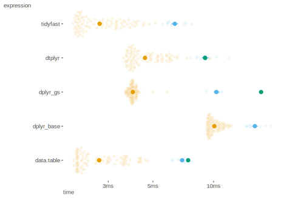
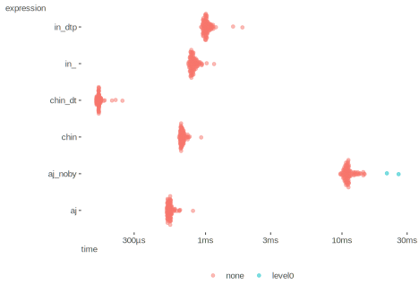

Explorations in faster data processing and other problems.
Oftentimes I’m looking to gain speed/memory advantages, or maybe just exploring how to do the same thing differently in case it becomes useful later on. I thought I’d start posting them, but then I don’t get around to it. Here are a few that have come up over the past year (or two 😞).
It really depends on what your needs are. Faster doesn’t mean memory efficient, and sometimes you have to roll your own solution. Furthermore, you may not want an additional package dependency beyond what you’re using. The good news is you’ll have options.
Required packages.
Also, in the following I turn off checking if the results are
equivalent (i.e. check = FALSE) because even if the
resulting data is the same, the objects may not be, or some objects may
even be of the same class but have different attributes. You are welcome
to double check that you would get the same thing.
This tidy timings section comes from a notably old endeavor (I think it was originally Jan 2020), but it looks like tidyfast still has some functionality beyond dtplyr, and it doesn’t hurt to revisit. My original timings were on a nicely suped up pc, but the following are on a year and a half old macbook with an M1 processer, and were almost 2x faster. I can say that in my own work I will switch between standard dplyr, dtplyr, and data.table.
Here I take a look at some timings for data processing tasks. My reason for doing so is that dtplyr has recently arisen from the dead, and tidyfast has come on the scene, so I wanted a quick reference for myself and others to see how things stack up against data.table.
So we have the following:
The following demonstrates some timings from here. I reproduced it on my own machine based on 50 million observations. The grouped operations that are applied are just a sum and length on a vector. As this takes several seconds to do even once, I only do it one time.
set.seed(123)
n = 5e7
k = 5e5
x = runif(n)
grp = sample(k, n, TRUE)
timing_group_by_big = list()
# dplyr
timing_group_by_big[["dplyr"]] = system.time({
df = tibble(x, grp)
r.dplyr = summarise(group_by(df, grp), sum(x), n())
})
# dtplyr
timing_group_by_big[["dtplyr"]] = system.time({
df = lazy_dt(tibble(x, grp))
r.dtplyr = df %>% group_by(grp) %>% summarise(sum(x), n()) %>% collect()
})
# tidyfast
timing_group_by_big[["tidyfast"]] = system.time({
dt = setnames(setDT(list(x, grp)), c("x","grp"))
r.tidyfast = dt_count(dt, grp)
})
# data.table
timing_group_by_big[["data.table"]] = system.time({
dt = setnames(setDT(list(x, grp)), c("x","grp"))
r.data.table = dt[, .(sum(x), .N), grp]
})
timing_group_by_big = timing_group_by_big %>%
do.call(rbind, .) %>%
data.frame() %>%
rownames_to_column('package')
save(timing_group_by_big, file = 'data/programming/timing_group_by_big.RData')
| package | elapsed |
|---|---|
| dplyr | 6.78 |
| dtplyr | 0.71 |
| data.table | 0.48 |
| tidyfast | 0.40 |
We can see that all options are notable improvements on dtplyr. Tidyfast is a little optimistic, as it can count but does not appear to do a summary operation like means or sums.
To make things more evenly matched, we’ll just do a simple grouped count. In the following, I add a different option for dplyr if all we want are group sizes. In addition, you have to ‘collect’ the data for a dtplyr object, otherwise it is not actually usable yet, and we don’t want to count the timing until it actually performs the operation. You can do this with the collect function or as_tibble.
data(flights, package = 'nycflights13')
head(flights)
flights_dtp = lazy_dt(flights)
flights_dt = data.table(flights)
bm_count_flights = bench::mark(
dplyr_base = count(flights, arr_time),
dtplyr = collect(count(flights_dt, arr_time)),
tidyfast = dt_count(flights_dt, arr_time),
data.table = flights_dt[, .(n = .N), by = arr_time],
iterations = 100,
check = FALSE
)
save(bm_count_flights, file = 'data/programming/timing_count_flights.RData')
Here are the results with a visual representation (extreme times shown alternate colors). It’s important to note the memory as well as the time. The faster functions here are actually taking a lot more memory to do it. If dealing with very large data this could be more important if operations timings aren’t too different.
| expression | min | median | mem_alloc |
|---|---|---|---|
| dplyr_base | 9.25ms | 9.88ms | 6.12MB |
| dplyr_gs | 3.65ms | 3.95ms | 6.06MB |
| dtplyr | 3.57ms | 4.19ms | 9.06MB |
| tidyfast | 2.01ms | 2.55ms | 9.06MB |
| data.table | 2.02ms | 2.37ms | 9.07MB |

Just for giggles I did the same in Python with a pandas DataFrame, and
depending on how you go about it you could be notably slower than all
these methods, or less than half the base dplyr approach. Unfortunately
I can’t reproduce it here because reticulate
still has issues with M1 out of the box, but I did run it on the
same machine using a df.groupby().size() approach to create
the same type of data frame. Things get worse as you move to something
not as simple, like summarizing with a custom function, even if that
custom function is still simple arithmetic.
A lot of folks that use Python primarily still think R is slow, but that is mostly because they don’t know how to effectively program with R for data science. I know folks who use Python more, but also use tidyverse, and I use R more but also use pandas quite a bit. It’s not really a debate - tidyverse is easier, less verbose, and almost always faster relative to pandas, especially for more complicated operations. If you start using tools like data.table, then there is really no comparison for speed and efficiency.
Fill in missing values by group. I’ve created a realistic example where the missingness is seen randomly across multiple columns, and differently across groups. This is a great example of where there is a notable speed/memory tradeoff. Very surprising how much memory data.table uses, while not giving much speed advantage.
set.seed(1234)
N = 1e6
Ng = 50000
create_missing <- function(x) {
x[sample(1:length(x), 5)] = NA
x
}
df_missing = tibble(grp = rep(1:Ng, e = N / Ng)) %>%
arrange(grp) %>%
group_by(grp) %>%
mutate(
x = 1:n(),
y = rpois(n(), 5),
z = rnorm(n(), 5),
across(x:z, create_missing)
) %>%
ungroup()
df_missing %>% head(5)
dt_missing = as.data.table(df_missing)
bm_fill <-
bench::mark(
tidyr = fill(group_by(df_missing, grp), x:z),
# dplyr = fill(group_by(df_missing, grp), x:z),
tidyfast = dt_fill(dt_missing, x, y, z, id = grp),
data.table = dt_missing[
,
c('x', 'y', 'z') := list(nafill(x, type = 'locf'),
nafill(y, type = 'locf'),
nafill(z, type = 'locf')),
by = grp
],
check = FALSE,
iterations = 5
)
saveRDS(bm_fill, 'data/programming/bm_fill.rds')
| expression | min | median | mem_alloc | median_relative | mem_relative |
|---|---|---|---|---|---|
| tidyfast | 217.8ms | 227.5ms | 398.3MB | 1 | 5.8 |
| data.table | 1.105s | 1.113s | 2.31GB | 4.89 | 34.52 |
| tidyr | 1.326s | 1.444s | 68.68MB | 6.35 | 1 |
Sometimes you don’t want that. In the following we have a situation
where we want to filter values based on the negation of some condition.
Think of a case where certain person IDs are not viable for
consideration. In many cases, a natural approach would be to use
something like a filter where instead of using
vals %in% values_desired, we just negate that. However,
another approach is to create a data frame of the undesired values and
use an anti_join. When using joins in general, you get a relative
advantage by explicitly noting the variables you’re joining on, so I
compare that as well for demonstration. Finally, in this particular
example we could use data.table’s builtin character match,
chin.
set.seed(123)
df1 = tibble(
id = sample(letters, 10000, replace = TRUE)
)
df2 = tibble(
id = sample(letters[1:10], 10000, replace = TRUE)
)
df1_lazy = lazy_dt(df1)
df2_lazy = lazy_dt(df2)
df1_dt = data.table(df1)
df2_dt = data.table(df2)
suppressMessages({
bm_antijoin = bench::mark(
in_ = filter(df1, !id %in% letters[1:10]),
in_dtp = collect(filter(df1_lazy, !id %in% letters[1:10])), # not usable until collected/as_tibbled
chin = filter(df1, !id %chin% letters[1:10]), # chin for char vector only, from data.table
chin_dt = df1_dt[!df1_dt$id %chin% letters[1:10],], # won't match other results due to class diff, but checked equality
aj = anti_join(df1, df2, by = 'id'),
aj_noby = anti_join(df1, df2),
iterations = 100,
check = FALSE
)
})
saveRDS(bm_antijoin, 'data/programming/bm_antijoin.rds')
In this case, the fully data.table approach is best in speed and
memory. In addition, if you are in the tidyverse, the antijoin is a very
good option. Hopefully the lesson about explicitly setting the
by argument is made clear.
| expression | min | median | mem_alloc | median_relative | mem_relative |
|---|---|---|---|---|---|
| chin_dt | 158µs | 165µs | 206.07KB | 1 | 1 |
| aj | 519µs | 547µs | 292.86KB | 3.31 | 1.42 |
| chin | 640µs | 672µs | 270.01KB | 4.07 | 1.31 |
| in_ | 749µs | 805µs | 387.29KB | 4.88 | 1.88 |
| in_dtp | 928µs | 1.011ms | 479.81KB | 6.12 | 2.33 |
| aj_noby | 9.739ms | 11.003ms | 1.43MB | 66.63 | 7.08 |

set.seed(1234)
df = tibble(
x = rpois(100000, 10)
)
dt = as.data.table(df)
bm_lag = bench::mark(
dplyr_lag = mutate(df, x_diff = x - lag(x)),
dt_lag = dt[, x_diff := x - shift(x)],
dt_dp_lag = mutate(df, x_diff = x - shift(x)),
dplyr_lead = mutate(df, x_diff = x - lead(x)),
dt_lead = dt[, x_diff := x - shift(x, n = -1)],
dt_dp_lead = mutate(df, x_diff = x - shift(x, n = -1)),
iterations = 100,
check = FALSE
)
saveRDS(bm_lag, 'data/programming/bm_lag.rds')
In this case, data.table is best, but using the dt function within the tidy approach is a very solid gain.
| expression | min | median | mem_alloc | median_relative | mem_relative |
|---|---|---|---|---|---|
| dt_lead | 354µs | 375µs | 813.84KB | 1 | 1.04 |
| dt_lag | 377µs | 424µs | 813.84KB | 1.13 | 1.04 |
| dt_dp_lead | 819µs | 901µs | 782.91KB | 2.4 | 1 |
| dt_dp_lag | 871µs | 998µs | 782.91KB | 2.66 | 1 |
| dplyr_lead | 1.062ms | 1.19ms | 1.53MB | 3.18 | 2 |
| dplyr_lag | 1.121ms | 1.473ms | 1.15MB | 3.93 | 1.5 |
Here is something I came across that was surprising to me and may be to you as well. For the same functionality, it turns out that the number of groups matter when doing groupwise operations. For the following I’ll even use a base R approach (though within dplyr’s mutate) to demonstrate some differences.
set.seed(1234)
N = 100000
df = tibble(
x = rpois(N, 10),
id = sample(1:100, N, replace = TRUE)
)
dt = as.data.table(df)
bm_first = bench::mark(
base_first = summarize(group_by(df, id), x = x[1]),
base_last = summarize(group_by(df, id), x = x[length(x)]),
dplyr_first = summarize(group_by(df, id), x = dplyr::first(x)),
dplyr_last = summarize(group_by(df, id), x = dplyr::last(x)),
dt_first = dt[, .(x = data.table::first(x)), by = id],
dt_last = dt[, .(x = data.table::last(x)), by = id],
iterations = 100,
check = FALSE
)
saveRDS(bm_first, 'data/programming/bm_first_1.rds')
The first result is actually not too surprising, in that the fully dt approaches are clear winners. Interesting is that the base last is a bit faster than dplyr’s last (technically nth) approach.
| expression | min | median | mem_alloc | median_relative | mem_relative |
|---|---|---|---|---|---|
| dt_first | 722µs | 879µs | 454.62KB | 1 | 1 |
| dt_last | 729µs | 891µs | 454.62KB | 1.01 | 1 |
| base_last | 2.063ms | 2.236ms | 2.06MB | 2.54 | 4.64 |
| dplyr_first | 2.113ms | 2.321ms | 2.06MB | 2.64 | 4.64 |
| base_first | 2.163ms | 2.724ms | 2.06MB | 3.1 | 4.64 |
| dplyr_last | 2.213ms | 2.766ms | 2.06MB | 3.15 | 4.64 |
In the following, the only thing that changes is the number of groups.
set.seed(1234)
N = 100000
df = tibble(
x = rpois(N, 10),
id = sample(1:(N/10), N, replace = TRUE) # <--- change is here
)
dt = as.data.table(df)
bm_first_more_groups = bench::mark(
base_first = summarize(group_by(df, id), x = x[1]),
base_last = summarize(group_by(df, id), x = x[length(x)]),
dplyr_first = summarize(group_by(df, id), x = dplyr::first(x)),
dplyr_last = summarize(group_by(df, id), x = dplyr::last(x)),
dt_first = dt[, .(x = data.table::first(x)), by = id],
dt_last = dt[, .(x = data.table::last(x)), by = id],
iterations = 100,
check = FALSE
)
saveRDS(bm_first_more_groups, 'data/programming/bm_first_more_groups.rds')
Now what the heck? The base R approach is way faster than even data.table, while not using any more memory than what dplyr is doing (because of the group by summarize). In your situation you might want the additional options that come with dplyr or data.table, but in this case you can just take the easy way.
| expression | min | median | mem_alloc | median_relative | mem_relative |
|---|---|---|---|---|---|
| base_first | 9.769ms | 10.775ms | 3.06MB | 1 | 4.17 |
| base_last | 11.783ms | 12.318ms | 3.06MB | 1.14 | 4.17 |
| dt_last | 18.612ms | 19.132ms | 752.15KB | 1.78 | 1 |
| dt_first | 18.498ms | 19.24ms | 752.15KB | 1.79 | 1 |
| dplyr_first | 19.483ms | 20.191ms | 3.06MB | 1.87 | 4.17 |
| dplyr_last | 20.366ms | 20.914ms | 3.06MB | 1.94 | 4.17 |
It’s very often we want to change a single value based on some
condition, often starting with ifelse. This is like our
previous fill situation for missing values, but more general.
Coalesce is similar to tidyr’s fill, and is
often used in cases where we might otherwise use an ifelse
style approach . In the following, we want to change NA values to zero,
and there are many ways we might go about it.
set.seed(1234)
x = rnorm(1000)
x[x > 2] = NA
bm_coalesce = bench::mark(
base = {x[is.na(x)] <- 0; x},
ifelse = ifelse(is.na(x), 0, x),
if_else = if_else(is.na(x), 0, x),
vctrs = vctrs::vec_assign(x, is.na(x), 0),
tidyr = replace_na(x, 0),
fifelse = fifelse(is.na(x), 0, x),
coalesce = coalesce(x, 0),
fcoalesce = fcoalesce(x, 0)
)
saveRDS(bm_coalesce, 'data/programming/bm_coalesce.rds')
The key result here to me is just how much memory the
dplyr::if_else approach is using, as well as how fast and
memory efficient the base R approach is even with a second step. While
providing type safety, if_else is both slow and a memory
hog, so probably anything else is better. tidyr itself would be a good
option here, and while it makes up for the memory issue, it’s relatively
slow compared to data.table and the function it’s a wrapper for
(vec_assign)
| expression | min | median | mem_alloc | median_relative | mem_relative |
|---|---|---|---|---|---|
| fcoalesce | 1µs | 2µs | 7.86KB | 1 | 1 |
| base | 2µs | 3µs | 7.91KB | 1.95 | 1.01 |
| fifelse | 3µs | 4µs | 11.81KB | 2.42 | 1.5 |
| vctrs | 3µs | 4µs | 11.81KB | 2.65 | 1.5 |
| tidyr | 8µs | 10µs | 11.81KB | 6.17 | 1.5 |
| coalesce | 12µs | 13µs | 19.67KB | 8.02 | 2.5 |
| ifelse | 16µs | 22µs | 47.31KB | 13.35 | 6.02 |
| if_else | 23µs | 29µs | 71.06KB | 17.77 | 9.04 |
I recently had a problem where I wanted to do a apply a certain
function that required taking the difference between the current and
last value. The problem was that ‘last’ depended on a specific condition
being met. The basic idea is that we want to take x - lag(x) but where
cond is FALSE, we need to basically ignore that value for
consideration, and use the previous for our lagged value (assuming the
condition is TRUE). So for the first two values where the
condition is met, this is straightforward (6 - 10). But for the fourth
row, 4 should subtract 6, rather than 5.
set.seed(1234)
df = tibble(
x = sample(1:10),
cond = c(TRUE, TRUE, FALSE, TRUE, FALSE, TRUE, FALSE, FALSE, TRUE, FALSE),
group = rep(c('a', 'b'), e = 5)
)
df
# A tibble: 10 × 3
x cond group
<int> <lgl> <chr>
1 10 TRUE a
2 6 TRUE a
3 5 FALSE a
4 4 TRUE a
5 1 FALSE a
6 8 TRUE b
7 2 FALSE b
8 7 FALSE b
9 9 TRUE b
10 3 FALSE b While somewhat simple in concept, it doesn’t really work with simple
lags, as the answer would be wrong, or sliding functions, because the
where the window is adaptive. I wrote the following to deal with this.
By default, it basically takes our vector under consideration,
x, makes it NA where the condition doesn’t
hold, then fills in the NA values with the last value. However there is
flexibility beyond that type of fill. In addition, the function applied
is generic, and might just work on the newly created variable, or use
both the original and the newly created variable.
conditional_slide <-
function(x,
condition,
fun,
direction = c("down"),
fill = NA,
na_value = NA,
...) {
if (!direction %in% c("constant", "down", "up", "downup", "updown"))
rlang::abort('direction must be one of "constant", "down", "up", "downup", "updown"')
if (length(x) != length(condition))
rlang::abort('condition and x must be the same length')
# can't use dplyr/dt ifelse since we won't know class type of fill
conditional_val <- ifelse(direction == 'constant', fill, NA)
.x <- ifelse(condition, x, conditional_val)
if (direction != 'constant')
.x <- vctrs::vec_fill_missing(.x, direction = direction)
class(.x) <- class(x)
result <- fun(x, .x, ...)
if (!is.na(na_value))
result[is.na(result)] <- na_value
result
}
The first example applies the function, x - lag(x), to
our dataset, and which in my case, I also wanted to apply that within
groups, which caused further problems for some of the available
functions I thought would otherwise be applicable. I also show it for
another type of problem, taking the cumulative sum, as well as just
conditionally changing the values to zero.
df %>%
group_by(group) %>%
mutate(
simple_diff = x - dplyr::lag(x),
cond_diff = conditional_slide(x, cond, fun = \(x, .x) x - lag(.x), na_value = 0),
simple_cumsum = cumsum(x),
cond_cumsum = conditional_slide(
x,
cond,
fun = \(x, .x) cumsum(.x),
direction = 'constant',
fill = 0
),
.x_0 = conditional_slide(
x,
cond,
fun = \(x, .x) .x,
direction = 'constant',
fill = 0
)
)
# A tibble: 10 × 8
# Groups: group [2]
x cond group simple_diff cond_diff simple_cumsum cond_cumsum .x_0
<int> <lgl> <chr> <int> <dbl> <int> <int> <int>
1 10 TRUE a NA 0 10 10 10
2 6 TRUE a -4 -4 16 16 6
3 5 FALSE a -1 -1 21 16 0
4 4 TRUE a -1 -2 25 20 4
5 1 FALSE a -3 -3 26 20 0
6 8 TRUE b NA 0 8 8 8
7 2 FALSE b -6 -6 10 8 0
8 7 FALSE b 5 -1 17 8 0
9 9 TRUE b 2 1 26 17 9
10 3 FALSE b -6 -6 29 17 0This is one of those things that comes up from time to time, and trying to apply a standard tool likely won’t cut it. You may find similar situations where you need to modify what’s available and create some functionality tailored to your needs.